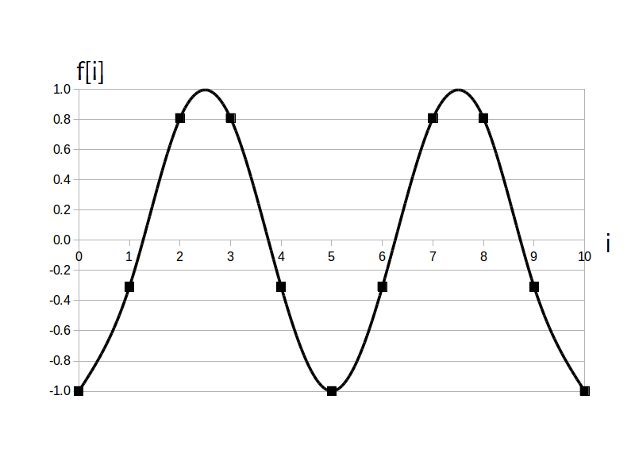

時間領域ディジタルサイン波とは、sin 関数または cos 関数(※)を時間領域ディジタル信号とみなした信号です。
※ cos 関数も「サイン波」と呼ぶ理由については時間領域アナログサイン波のアクティビティを参照して下さい。
時間領域ディジタルサイン波の定義式は次の通りです。
または
\[ f[i] = a \cdot \cos \left ( \frac{2 \pi}{\textrm{T}_d} \cdot i + \phi \right ) \]$a$・・・振幅、実数の定数、範囲は実数全体、単位は扱う信号の種類による(ボルトとかアンペアとか度とかetc.)
$\textrm{T}_d$・・・周期、実数の定数、範囲は $\textrm{T}_d > 0$、単位は[点]
$\phi$ ・・・初期位相、ファイと呼ぶ、実数の定数、範囲は $-\pi \leq \phi \leq \pi$、単位は [rad]
$i$・・・時刻、整数の変数、単位は無し(ディジタル信号なので秒の概念は無い)
なお $i$ は変数ですが、$a$、$\textrm{T}_d$、$\phi$は定数パラメータなので事前に値を決めておきます。
では例として $a=1$、$\textrm{T}_d = 5$ [点]、$\phi= -\pi/2$ [rad] の時間領域ディジタルサイン波(sin関数版)のグラフを以下に示します。
ディジタル信号ですので本来は点だけのグラフになりますが、点だけだと形が分かりにくいので平滑化線を補助線として追加しています。
$f[i] = 1 \cdot \sin( 2\pi /5 \cdot i -\pi/2 ) \ , \ (i=0,1, \cdots, 10)$
